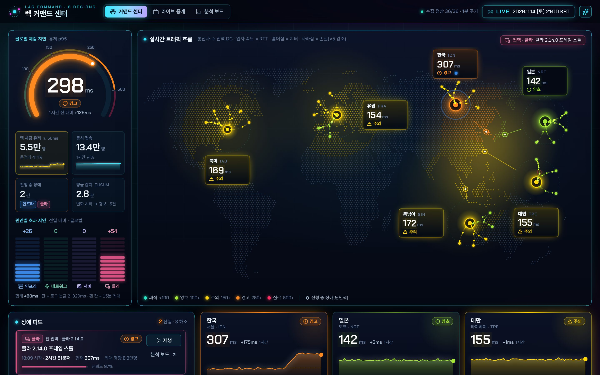
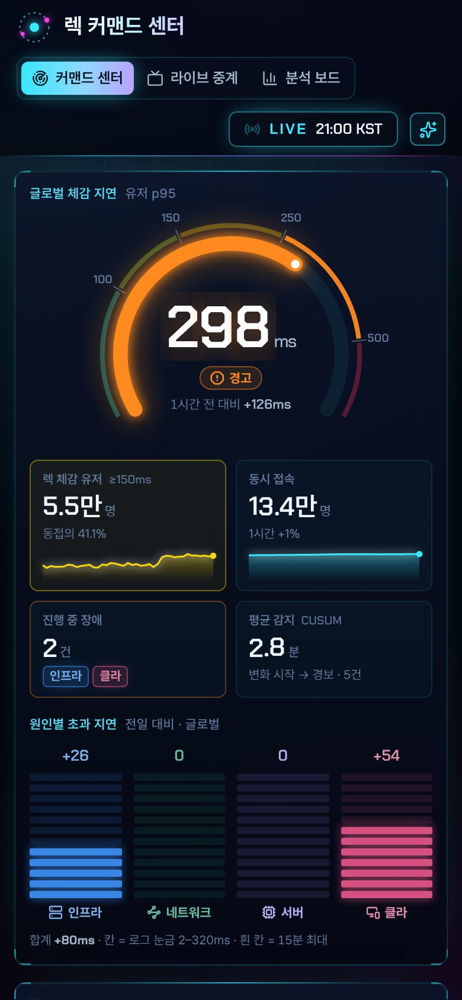
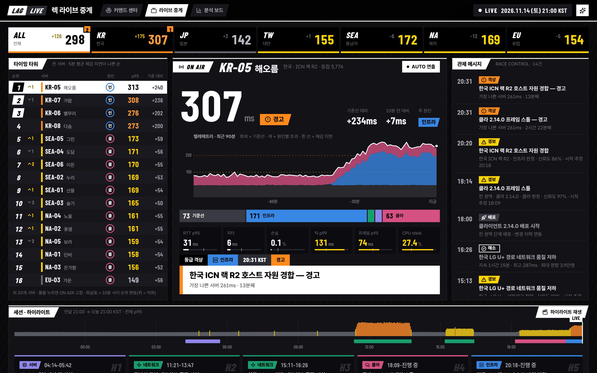
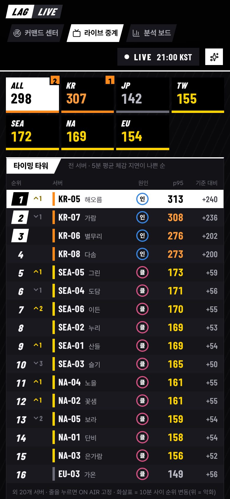
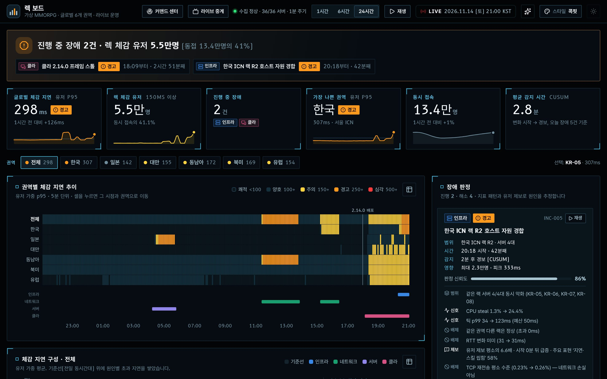
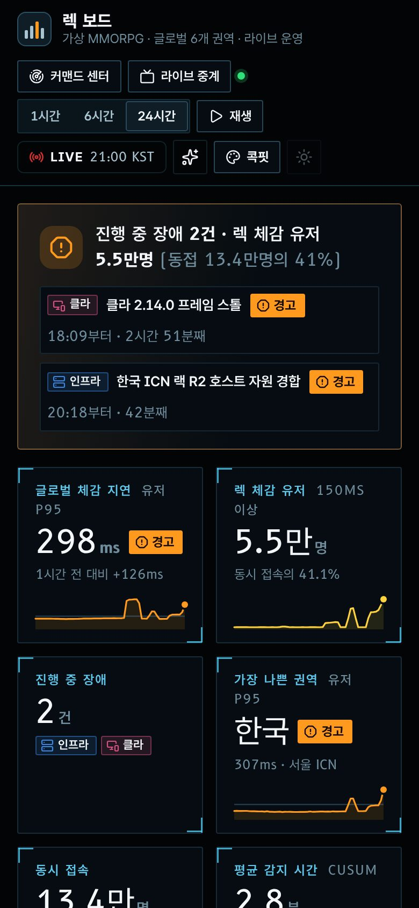
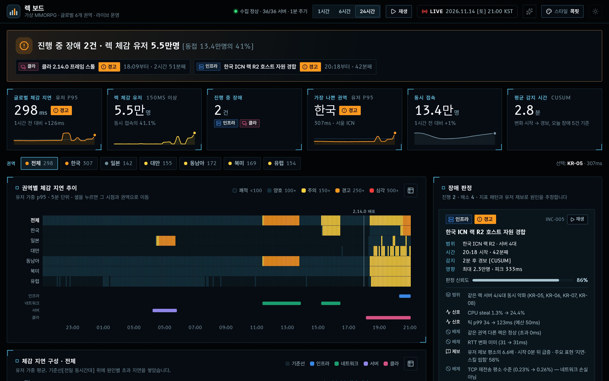
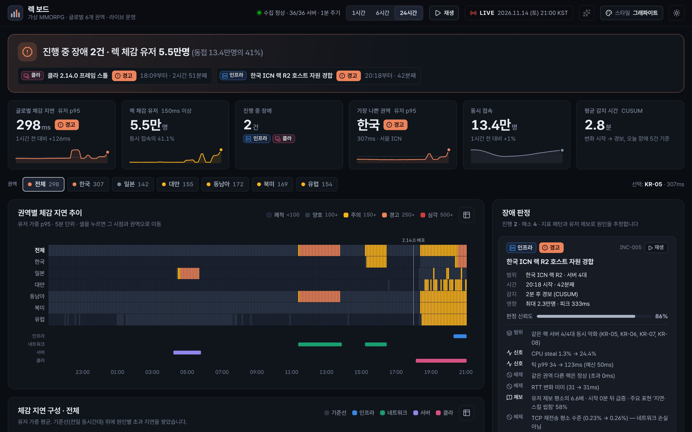
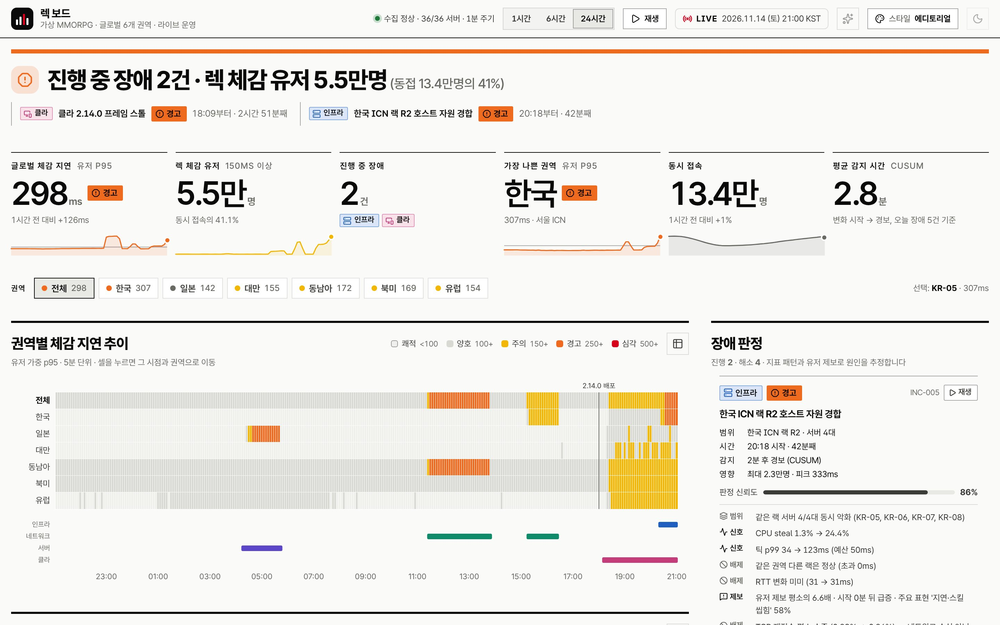
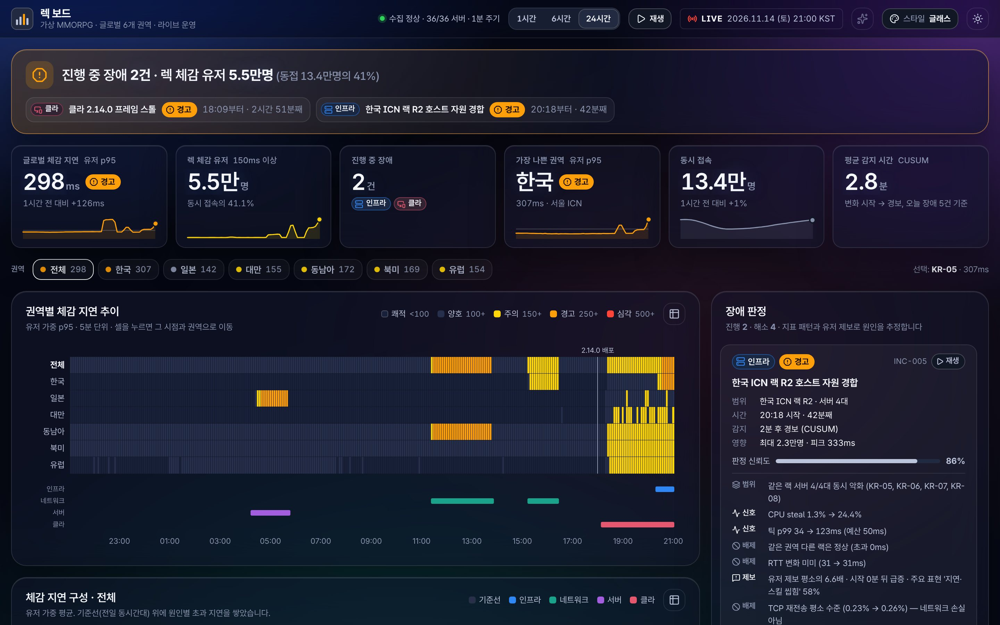

벽 화면이면 커맨드 센터 또는 중계
여러 사람이 3m 밖에서 보는 화면은 한 가지 질문에 크게 답해야 합니다. 분석 보드는 앉아서 파고들 때 씁니다.
같은 가상 데이터(2026-11-14 21:00 KST, 6개 권역 36개 서버)를 세 가지 화면 문법으로 만든 후보들입니다. 어떤 스타일로 갈지 정하는 과정이라 지금까지 만든 화면을 모두 남겨 두었습니다. 보드 상단의 화면 전환 버튼이나 주소의 #command · #broadcast · #analysis로 같은 시각을 나란히 볼 수 있습니다.
| 후보 | 무엇이 주인공인가 | 움직임이 말하는 것 | 색 쓰는 법 | 맞는 자리 | 주요 레퍼런스 |
|---|---|---|---|---|---|
| 커맨드 센터 | 세계 흐름 지도 | 트래픽 흐름: 입자 속도는 RTT, 흩어짐은 지터, 사라짐은 손실 | 정상도 색(살아 있음), 강한 색은 경보에만 | 관제실 벽, 시연 | GitHub 지구본, Cloudflare Radar, 영화 FUI |
| 라이브 중계 | 타이밍 타워 · ON AIR | 순위와 사건: 타워 재정렬, 자막, 관제 메시지 | 정상은 회색, 색이 보이면 일이 났다 | 장애 대응 중 공유 화면, 사후 리뷰 | F1 중계, Riot Worlds, Fox IndyCar·NASCAR |
| 분석 보드 | 시간 축 차트와 근거 | 시간 커서와 재생 | 스타일 프리셋 5종 (기본 콕핏) | 데스크, 원인 분석 | 관측성 대시보드 규칙, 항공 콕핏 |
여러 사람이 3m 밖에서 보는 화면은 한 가지 질문에 크게 답해야 합니다. 분석 보드는 앉아서 파고들 때 씁니다.
권역·통신사 단위 장애가 많으면 지도가, 서버 단위 장애와 순서가 중요하면 순위가 빨리 읽힙니다.
세 화면은 같은 모델을 공유합니다. 장애 카드의 "분석 보드" 버튼은 그 장애를 고른 채 분석 보드를 엽니다.


근거: GitHub 지구본 · Cloudflare Radar 개편 · Mark Coleran 인터뷰 · 저장소 knowledge/command-center.md


근거: DixonBaxi의 F1 중계 그래픽 · Fox IndyCar 개편 · Tendril의 Worlds 2022 · 스포츠 자막 가이드 · 저장소 knowledge/broadcast.md







스타일별 근거와 비교표: 저장소 knowledge/styles.md, docs/style-gallery/
분석 보드에 스타일 프리셋 5종을 추가했습니다. 콕핏을 기본값으로 정했습니다.
배치와 스타일을 완전히 새로 짠 커맨드 센터를 첫 화면으로 추가했습니다. 분석 보드는 한 번의 클릭 거리에 남겼습니다.
다른 레퍼런스(레이스·e스포츠 중계)로 라이브 중계를 추가했습니다. 첫 화면은 그대로 커맨드 센터이고, 최종 선택은 아직 정하지 않았습니다.